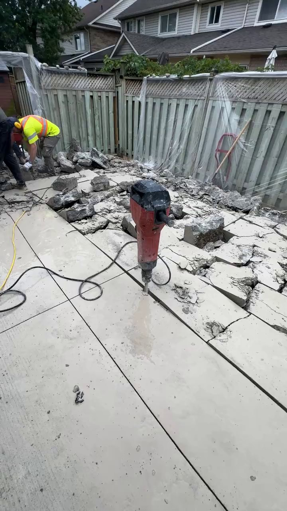

01 / DEMOLITION
Make way for the next phase.

FIG. 02A Concrete floor being broken out
Removal work for interiors, slabs, pads, garages and debris.
- Interior demolition
- Concrete slab removal
- Concrete pad removal
- Garage demolition
- Debris removal
00 / TORONTO + GTA
Interior demolition, concrete removal and waterproofing for homes and job sites across Toronto and the GTA.

FIG. 00A Interior membrane, sump pit and floor surface
01 / PROJECT TYPE
Select the closest match. It will be added to the estimate request above.
02 / SCOPE OF WORK
Demolition is the main focus. Waterproofing can follow where the project calls for it.
FIG. 02A Concrete floor being broken out
Removal work for interiors, slabs, pads, garages and debris.

FIG. 02B Foundation membrane in an open trench
Interior and exterior systems around the foundation and drainage path.
System detail / Real footage
Break out: a concrete floor is broken up.
Clear: broken concrete is carted off the site.
Drain: drainage pipe laid beside a window well.
Sump pit: where collected water goes.
Wrap: dimpled membrane lines the basement wall.
Finish: sump lid and membrane, ready for the next trade.

Real footage from our jobs
04 / CLIENT DIAGRAMS
The same goal two ways: water is collected and led away from the foundation.
Interior waterproofing system

Window well and drainage

How it works / 3D illustration
Break out and remove what is in the way.
Open the foundation wall and find where the water gets in.
Seal the wall and wrap it with a dimpled drainage membrane.
Add gravel and a weeping tile so water has a path away.
Water is collected and led away from the foundation.
3D illustration of the process, not to scale
06 / PROJECT FILE
Filter the supplied project photography and open any image for a closer view.
07 / SITE REELS
Videos load only after you choose play. The testimonial card is clearly marked as pending.


Pending client-supplied footage.
08 / SOURCE RATING
Based on 66 Google reviews. Read the source profile directly—no quotes or customer names are reproduced here.
View Google profile09 / QUESTIONS
Yes. Demolition is available as its own service, including interior work, concrete removal, garage demolition and debris removal.
Last Nail offers both. When both are needed, coordinating the stages can mean fewer hand-offs for a homeowner or contractor.
The page serves homeowners and general contractors across Toronto and the GTA.
Share the address or postal code, what needs to be removed or what water condition is visible, and any access details you already know.
Interior waterproofing, exterior waterproofing, foundation crack repair, drainage and sump work are listed services.
Last Nail serves Toronto and the GTA.